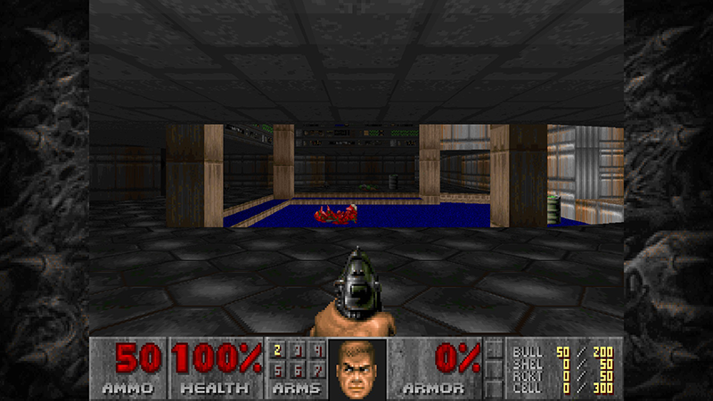
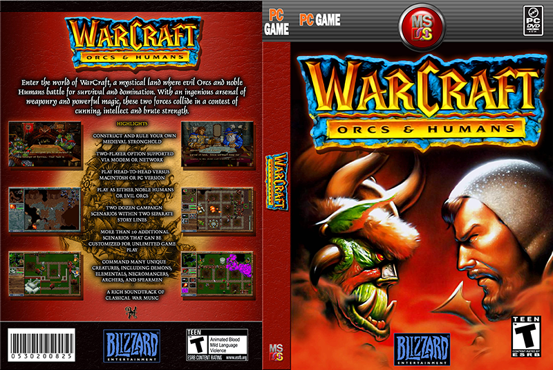
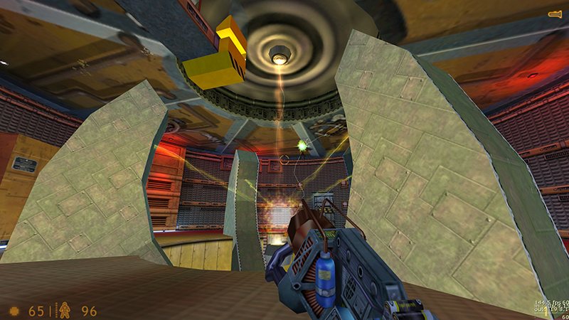

Doom - id Software (1993)
Desarrollado por id Software, Doom es un shooter en primera persona que revolucionó la industria de los videojuegos. Los jugadores asumen el rol de un marine espacial que combate hordas de demonios en una base marciana. Destacó por su innovador uso de gráficos en 3D y por permitir partidas multijugador en red local. Su motor gráfico y diseño de niveles sentaron las bases para futuros títulos del género. Doom se convirtió en un fenómeno cultural y estableció nuevos estándares en los juegos de acción.
Credit: id Software (Press Kit)
Warcraft: Orcs & Humans - Blizzard (1994)
Orcs & Humans, desarrollado por Blizzard Entertainment, es un juego de estrategia en tiempo real que introdujo a los jugadores en el conflicto entre humanos y orcos en el reino de Azeroth. Permitía a los jugadores elegir entre ambas facciones, cada una con unidades y estructuras únicas. El juego combinaba la recolección de recursos, construcción de bases y combate estratégico. Su modo multijugador fue pionero en el género, fomentando enfrentamientos competitivos. Este título sentó las bases para futuras entregas y expandió el universo de Warcraft.
Credit: Blizzard Entertainment, Hexxxer & Snackbar Media
Half-Life - Valve (1998)
Desarrollado por Valve, Half-Life es un shooter en primera persona que sigue la historia de Gordon Freeman, un científico atrapado en una instalación de investigación tras un experimento fallido. El juego es reconocido por su narrativa inmersiva, ausencia de cinemáticas tradicionales y una jugabilidad que integra historia y acción de manera fluida. Introdujo una inteligencia artificial avanzada para los enemigos, ofreciendo desafíos más realistas. Half-Life recibió elogios por su diseño innovador y ha influenciado numerosos títulos posteriores. Su éxito dio origen a una franquicia y estableció a Valve como un desarrollador líder en la industria.
Credit: Imagen Propia - Mat. V.